Scaling Zaapi from a Thai-only SaaS to a product that competes in the international market — reworking the core chat, AI agent, automation, and analytics experience around how customer service teams actually work.
+220%
ARR (annual recurring revenue) jumped over two years (Q3 '23 – Q2 '25)
+650%
Number of messages sent on desktop (Q3 '23 – Q2 '25)
+40%
New subscribers in two months after website and brand refresh
10+
First-time international clients across SEA (SG, PH & MY), breaking into new regional markets
Role
Product Design Lead
Company
Zaapi
Timeline
Q3 '23 – Q2 '25
Markets
TH → SG, PH, MY
Process
Design Thinking (Double Diamond)
Executive Summary
The Situation
Zaapi is a conversational commerce and customer-service platform — unifying chat, AI agents, automations, and analytics for teams selling across Shopee, Lazada, LINE, and other channels. It grew fast domestically, but carried assumptions specific to the Thai market.
The Problem
Three distinct user roles shared the same login — Marketing/E-commerce Manager, Customer Service Manager, and Business Owner — each with different responsibilities, KPIs, and reasons to open the dashboard. Designing for "the user" wasn't going to work.
Timeline & Team
Q3 '23 – Q2 '25 · Started solo, promoted Senior → Lead, grew the team to 2 designers, partnering with the Head of Product and a 5-engineer tech team
My Contribution
Led product design across the platform as Zaapi expanded internationally — from research and role segmentation through the redesigned chat, AI agent, automation, and analytics experience, to handover.
The Result
+220% ARR growth and 10+ first-time international clients across Singapore, the Philippines, and Malaysia within two years.
Context
A Thai SaaS built for one market, asked to win a bigger one
Zaapi is a VC-backed startup out of Singapore, built to give Southeast Asia's e-commerce sellers the tools to grow. The regional ambition was there from day one — but the product itself was still Thai-only: workflows, terminology, and dashboards built around how one type of team worked in one market, not the range of roles and countries Zaapi needed to serve next.
The push into a second market wasn't even planned yet when it started. A customer in the Philippines found Zaapi organically and signed up anyway — proof the demand existed before the roadmap did.
Problem
One product, three very different jobs to be done
Designing for a single "user" would have meant guessing whose needs won by default — and workflow interviews made it clear that guess would be wrong for two out of three roles, every time. Each one opened the same dashboard for a different reason, judged it by different numbers, and would quietly stop trusting the product the moment it felt built for someone else's job.
Marketing / E-commerce Manager
Cares about
Leads & ad performance
Campaign conversion
Customer acquisition
Customer Service Manager
Cares about
Response rate & time
CSAT
Case & crisis management
Business Owner (SME)
Cares about
Revenue & growth
Orders & sales
Store health across channels
My Role
What I owned, end to end
My job was to lead product design across the platform as Zaapi expanded internationally — starting with understanding who was actually using it, and why the product needed to flex. I owned the research, the role segmentation, the design direction and strategy for how each surface adapted per role, validation testing with customer service managers and business owners, and the handover documentation. I started as the only designer at Zaapi — Senior Product Designer, promoted to Product Design Lead partway through — partnering directly with the Head of Product and a five-engineer tech team. With a limited design budget, I made the case for more headcount and brought on a junior designer to help execute at the quality and pace the roadmap needed: I kept ownership of direction, strategy, and UX; they specialized in visual design and polish. We ran a one-week design cadence alongside engineering's two-week sprints, with weekly check-ins and daily standups to stay in sync as the roadmap expanded into multiple markets in parallel.
Design Process
A shared process, not a design silo
Zaapi's design process runs on a Double Diamond shape — Discover and Define before Develop and Deliver — with fast user validation and results tracked at every stage, kept in sync with product and engineering rather than run in a design silo. Research pulled from whichever method fit the question: surveys, user interviews (both online and on-site), user-journey mapping, persona mapping, fake-door mockups to test demand before building, insight from the sales team on subscribers and churn, behavioral and product analytics (Hotjar, Amplitude, user impersonation), competitor analysis, and reaching out to customers directly.
Double Diamond — problem space (discover, define) → solution space (develop, deliver)
Discover and Define covered the interviews, analytics, and research behind the three role-based personas. Develop and Deliver covered the user flows, wireframes, and validation testing, through to what shipped — with results tracked at every stage.
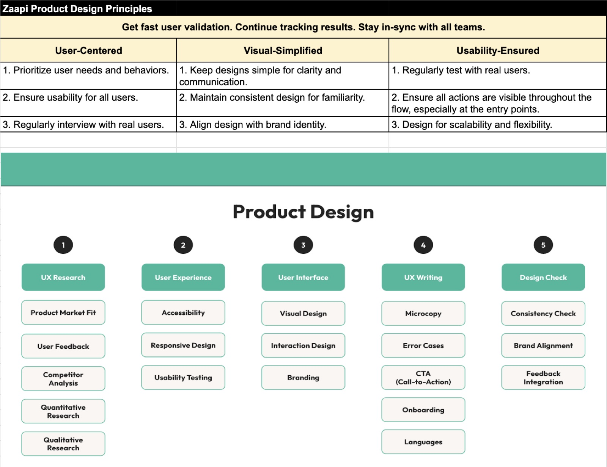
Zaapi Product Design Principles
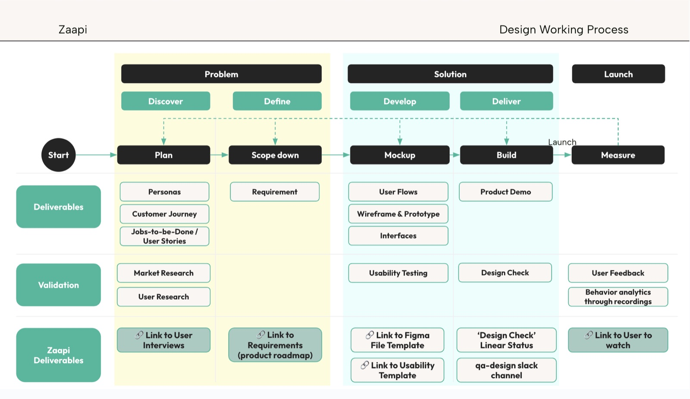
Zaapi Design Working Process
On-site research
Interviews ran online and on-site — and on-site meant customers' offices and stores, next to the people actually answering the chats.
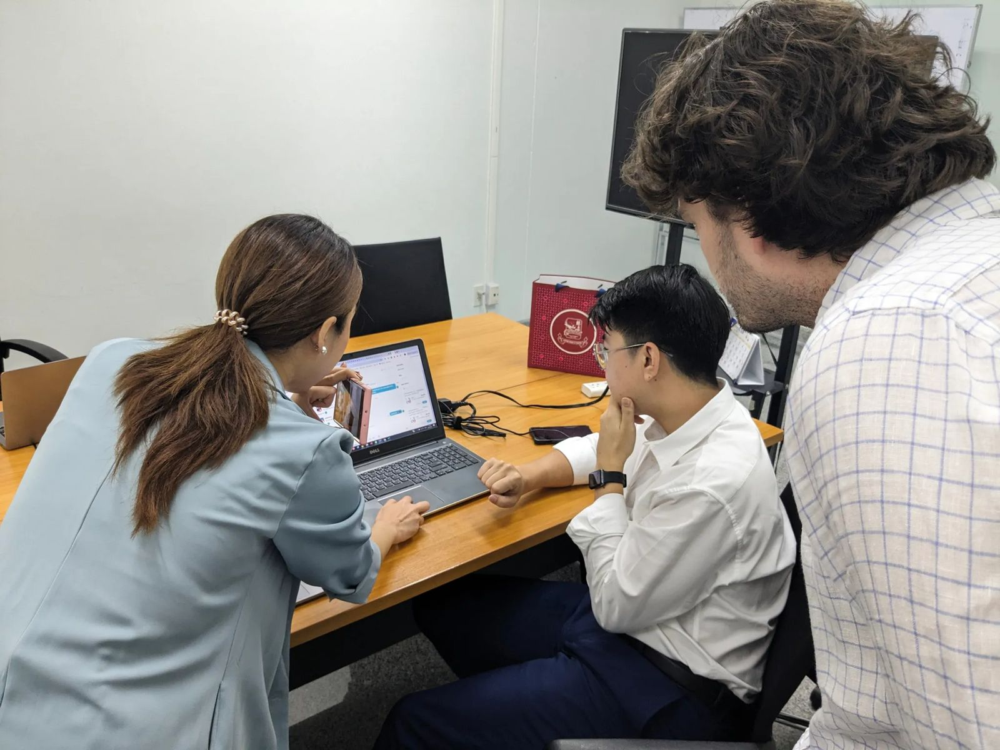
On-site interview
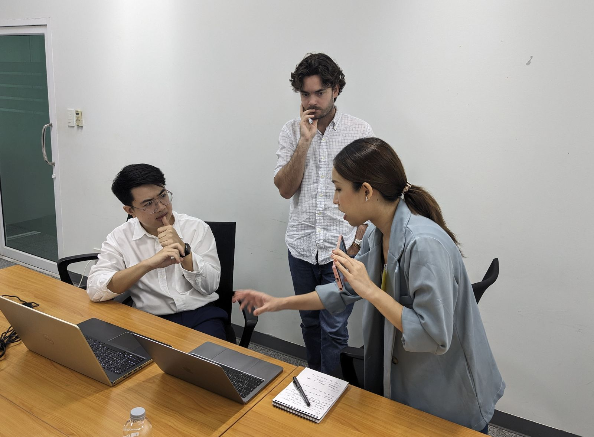
On-site working session
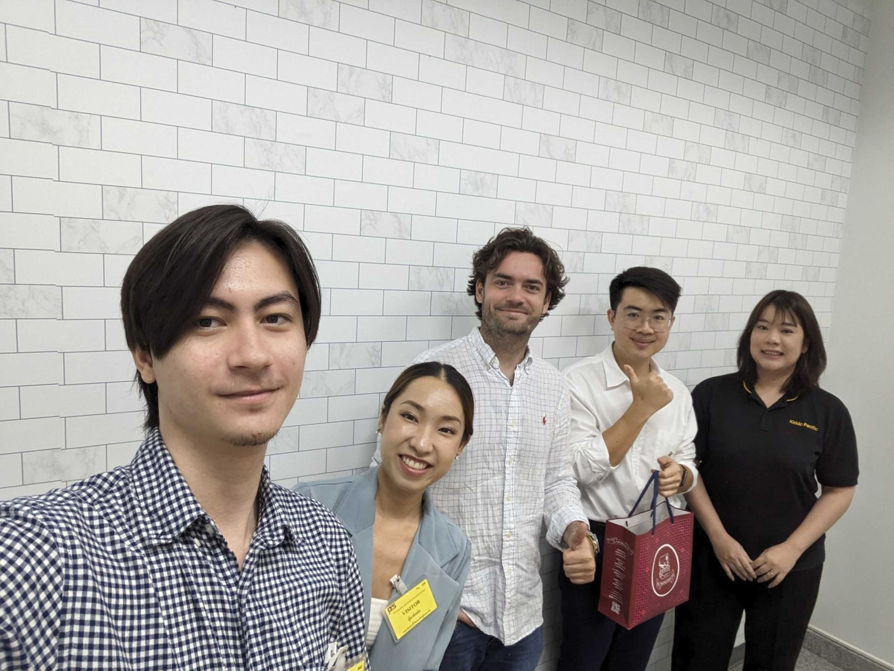
With a customer team, on-site
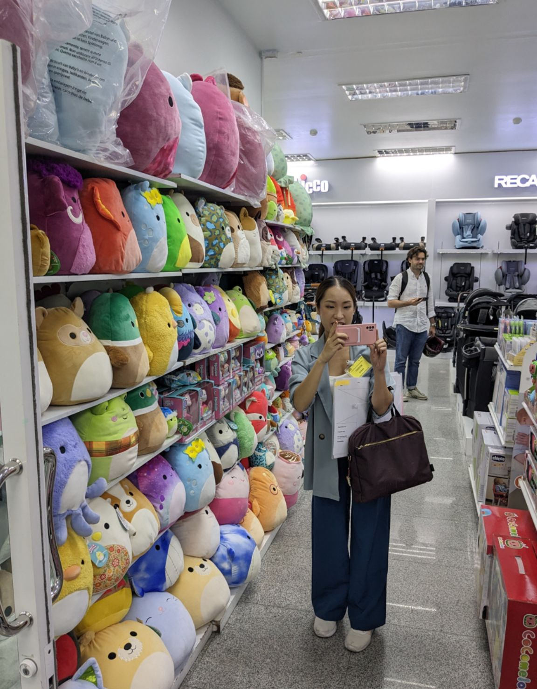
Store visit
Key insights
Fragmented channels lead to missed messages — sellers juggling WhatsApp, Facebook/Instagram DMs, and marketplace inboxes routinely dropped chats simply by switching apps, creating frustrated customers and lost revenue.
SLA compliance is non-negotiable — CS managers live in fear of platform penalties; without real-time SLA visibility and automated alerts, even one missed message could hurt store ratings and incur fines.
Performance is invisible, and un-rewarded — when each channel reports stats differently, managers can't fairly measure or incentivize their agents. A single dashboard with normalized KPIs was essential to drive accountability.
Context is scattered, slowing agents down — hunting across order-management, product catalogs, and loyalty systems wasted agents' time. Embedding a customer-360 view directly into chat cuts resolution time and lifts service quality.
Users churn out fast without sticky features — without automation, AI, and analytics keeping teams inside the product daily, there was nothing holding them there.
Research artifacts
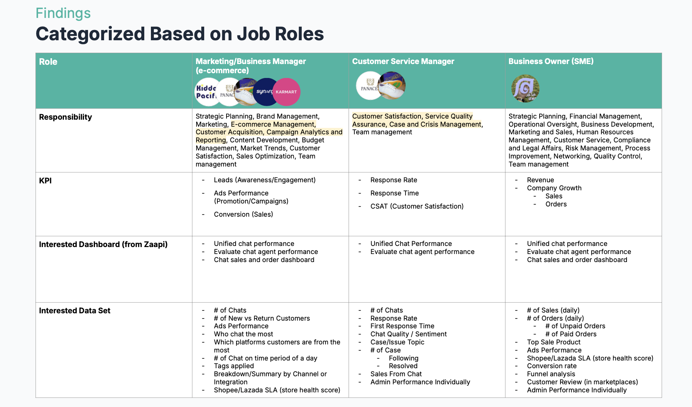
Findings — categorized by job role
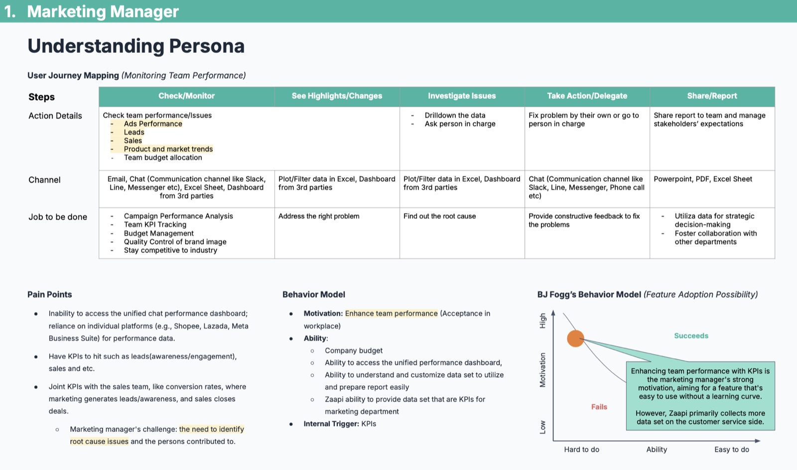
Persona 1 — Marketing / E-commerce Manager
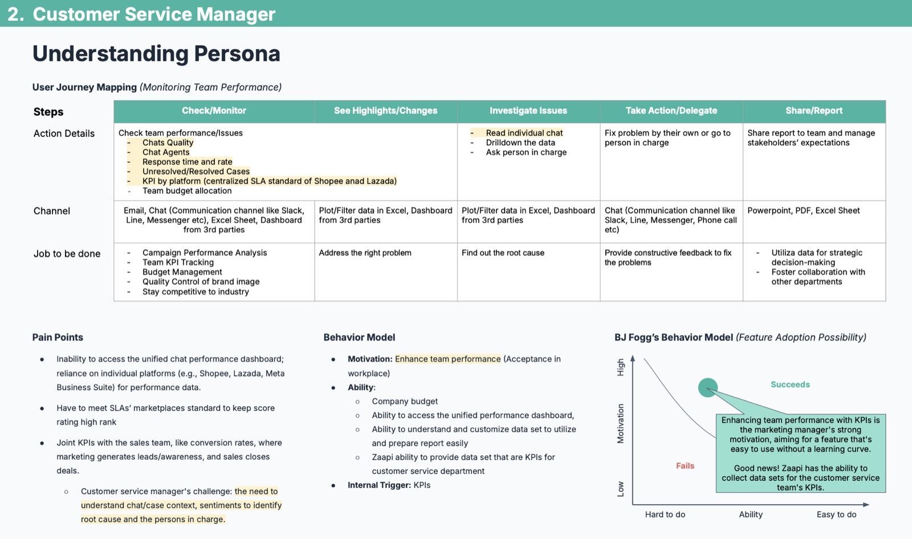
Persona 2 — Customer Service Manager
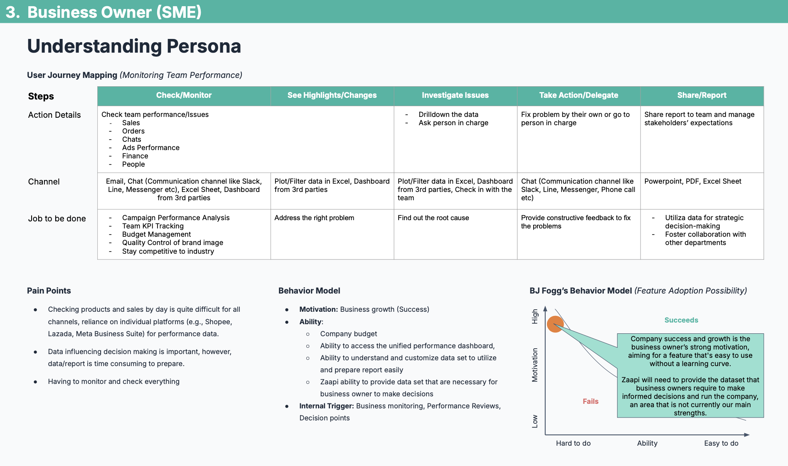
Persona 3 — Business Owner (SME)
Key Decisions
What I chose, and why
Three decisions shaped whether this actually became a regional product, not just a Thai one with better UI — one about how the product should adapt to different roles, one about what order to spend a small team's time in, and one I had to defend, not just make.
The roadmap, phase by phase
Every decision below sits inside one sequence: earn product-market fit at home first, then build what it takes to sell across SEA, then deepen the core product — from chat to tickets, and from AI replies to AI actions.
Phase
Focus
What we built
2024Phase 1
Build the foundation for chat commerce — product-market fit in the Thai market
Build the foundation to go international across SEA
Website and brand revamp to capture the SEA market
WhatsApp integration
Stronger AI and automations
2026Phase 3 · Now
Move from a unified chat inbox to a ticket inbox
Ticket inbox
AI Agent 2.0 — AI actions and higher accuracy
Design for the role, not "the user"
Alternative: one generic dashboard serving every login the same way
Chose to keep the underlying data the same but change entry points and emphasis per role — Marketing/E-commerce, Customer Service, and Business Owner each land on what matters to their KPIs first. A single generic view would have made the product feel built for none of the three.
Prove PMF before spending on regional polish
Alternative: investing in the website and brand revamp for regional expansion in parallel with the core product work
Chose to sequence it instead: integrations, core chat functionality, and the sticky features — automation, AI, analytics — had to prove product-market fit in Thailand first. The regional brand revamp only got investment once Phase 1 numbers justified it. The competitive risk of waiting was lower than it looked: Thailand's customer service tools didn't focus on e-commerce, and the international e-commerce tools that did lacked integrations with SEA-specific marketplaces like Shopee, Lazada, and TikTok Shop — nobody else could easily out-execute the gap while we sequenced. The real cost was internal, not competitive: research, UX, UI, and branding all had to hit a high bar on a tight timeline with a design team that started at just one person.
When priorities clashed, the user problem decided
Alternative: the instinct — in a startup where everyone wears every hat — to move on regional polish and parallel market launches at the same time as the core product work
What kept that from turning into a tug-of-war was a shared principle everyone actually followed, not a hierarchy: the Head of Product, engineering, and I each owned our own domain, but the final call never went to whoever pushed hardest — it went back to whichever answer actually solved the user's problem. Every time someone pushed to go regional sooner, the same question settled it: what do Thai customers still need fixed before we're ready to sell somewhere new. That's what held the line, not seniority.
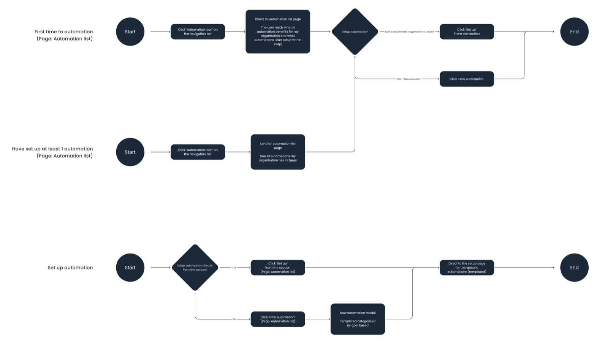
End-to-end user flow
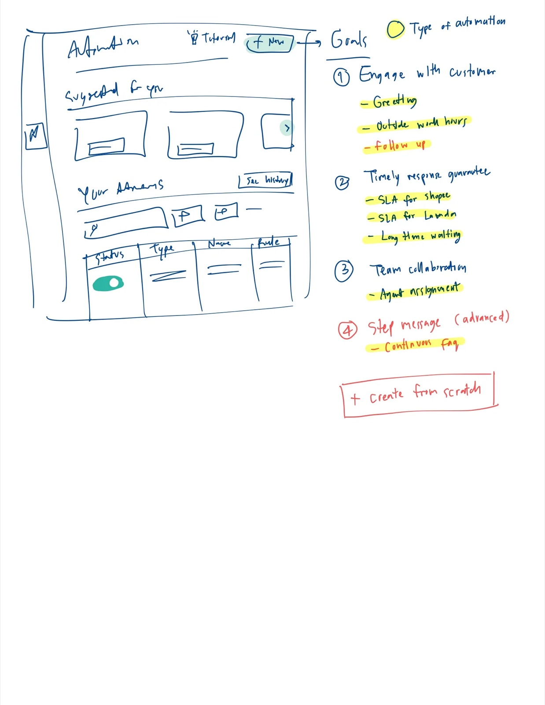
Low-fidelity wireframes
Solution & Delivery
What shipped
Both decisions above shaped what actually got built: a redesigned chat workspace, a rebuilt AI agent experience, a visual automation flow builder, and analytics that speak to each role's own KPIs — shipped incrementally, Thailand's proof point first, as the platform scaled internationally. Flows were stress-tested against real support scenarios along the way: a spike in chats, a flagged case, a campaign under-performing — not just the happy path.
Final interfaces
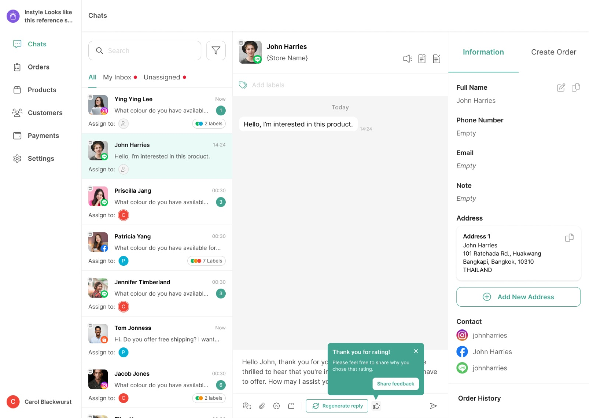
Before — Chat
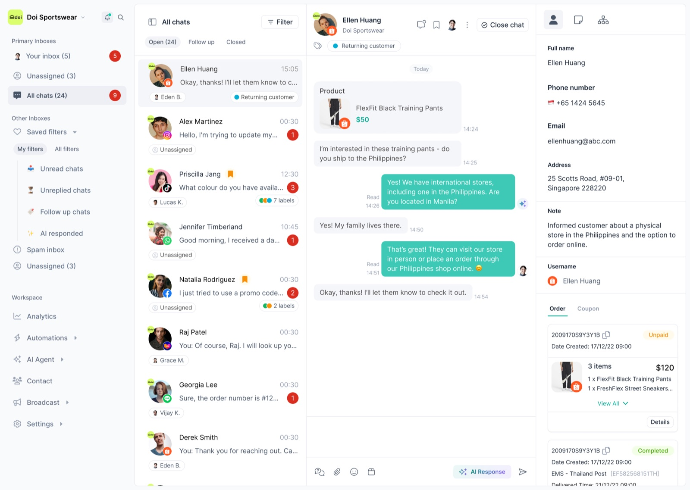
After — Chat
Before — AI Agent
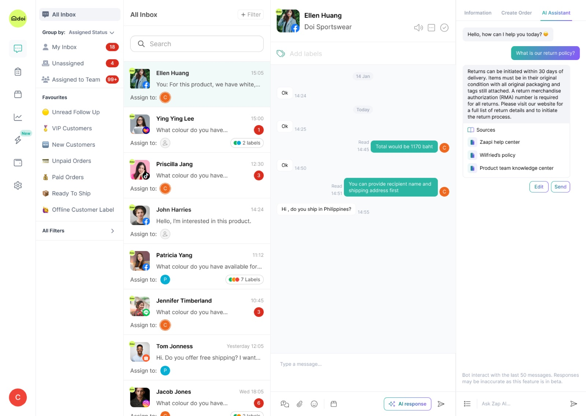
After — AI Agent
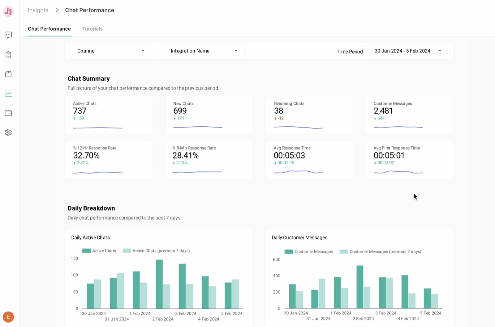
Before — Analytics
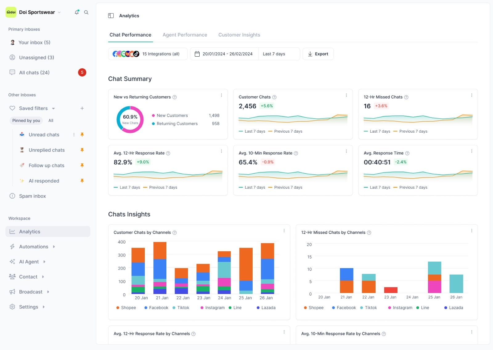
After — Analytics
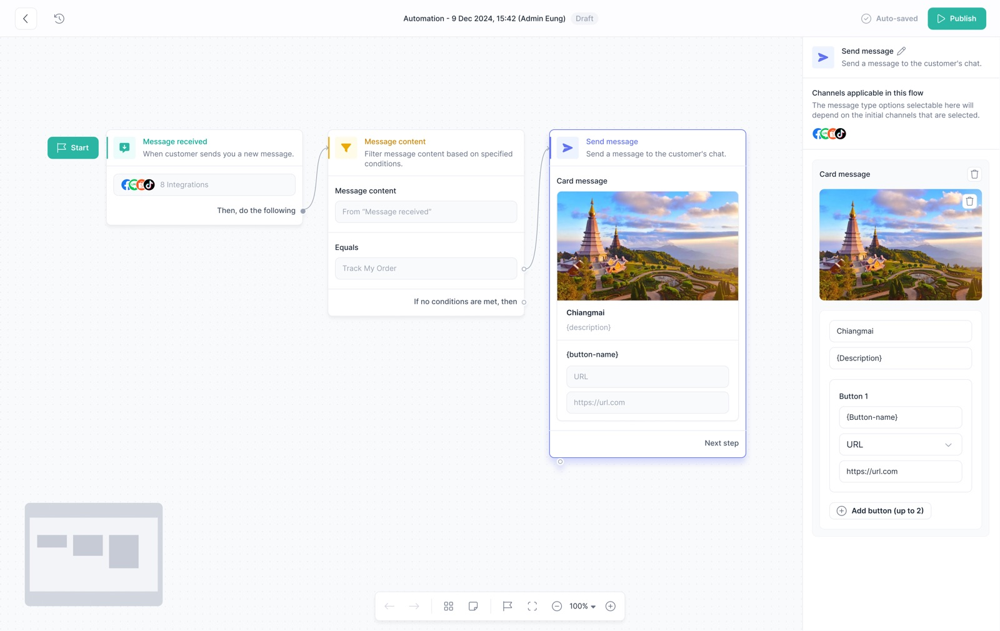
Visual automation flow builder
Website & brand revamp
The site itself still read as a Thai-only product — it had to look like something an international buyer could trust before Phase 2 could work. The revamp shipped for Q2 '25, and directly preceded the +40% new-subscriber lift in the eight weeks after launch.
Website revamp — Thai-only to international (SEA), Q2 '25
Handover
Componentized in Figma with documented states and edge cases, so engineering could build without guessing — a requirement once the roadmap meant shipping across multiple markets in parallel.
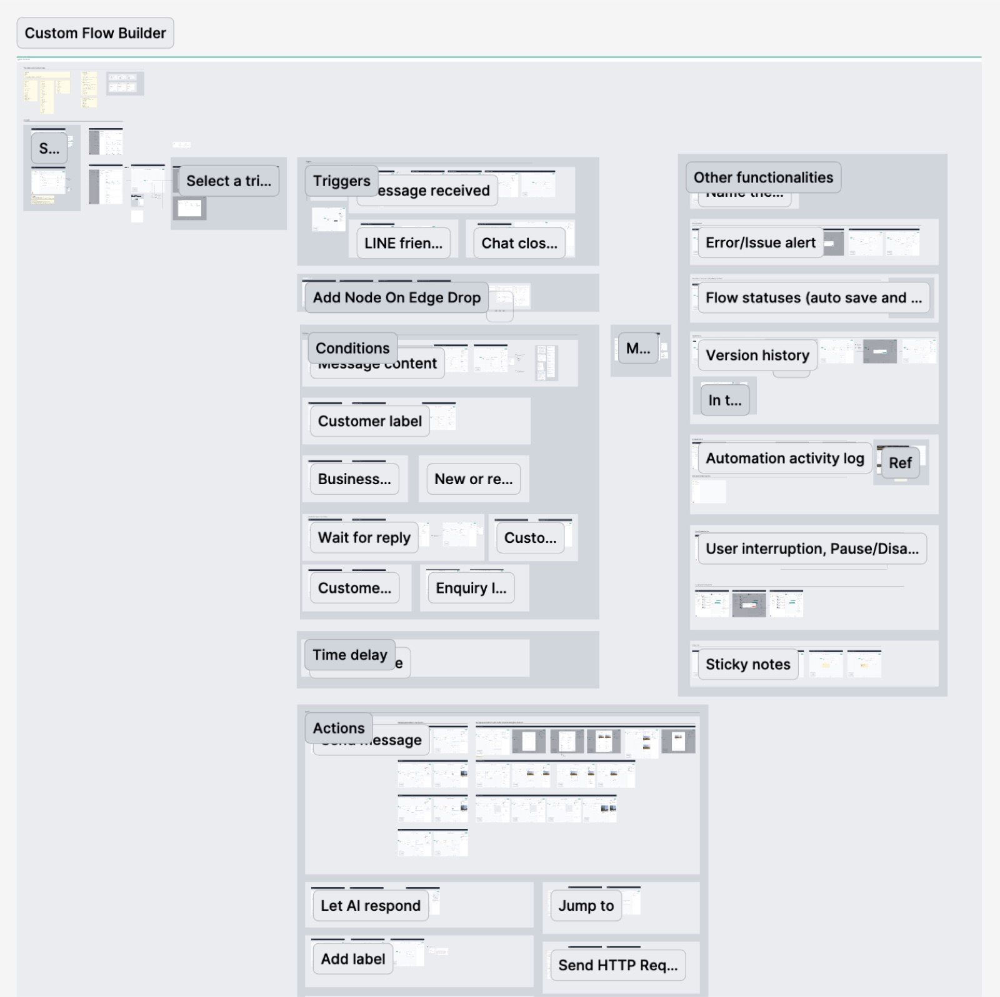
Component & handover documentation
Impact & Learning
+220%
ARR (annual recurring revenue) jumped over two years (Q3 '23 – Q2 '25)
+650%
Number of messages sent on desktop (Q3 '23 – Q2 '25)
+40%
New subscribers in two months after website and brand refresh
10+
First-time international clients across SEA (SG, PH & MY), breaking into new regional markets
Where it stands today — Q3 2026
Zaapi now has paying customers in 8 countries outside Thailand — Malaysia (47), Singapore (25), the Philippines (23), Laos (7), Indonesia (2), and one each in Vietnam, South Korea, and Egypt: 107 paying international stores, out of 168 active international stores overall. International now makes up roughly 17% of Zaapi's ~968 active stores platform-wide, up from the 10 first international clients this project started with.
The other half of the impact was never just geography — it was product-market fit. The features that carried Zaapi from those first 10 clients to a genuinely regional product were built around what the Marketing Manager, Customer Service Manager, and Business Owner personas actually needed, not a generic feature list.
What I'd improve
Bringing on a junior designer to handle visual execution was the right call for shipping at the quality and pace the roadmap needed — but it didn't solve for research. I stayed the only person doing discovery and validation throughout, which is exactly why Phase 2 leaned on market research and inference rather than direct interviews in Singapore, the Philippines, or Malaysia: the Thai personas held up well enough to build on, but I never had the bandwidth to confirm that with real users in the new markets before designing for them. What I'd do differently: when I made the case for headcount, I'd weight research capacity as heavily as visual execution — a junior researcher, or a second designer comfortable running discovery, would have let me validate assumptions in each new market instead of carrying that risk forward on inference alone.
Thanks to the Zaapsters
None of this was a solo effort. We came from very different cultural backgrounds but shared one goal — move quickly, work as a tight-knit team, and build something that genuinely made a difference for our customers.